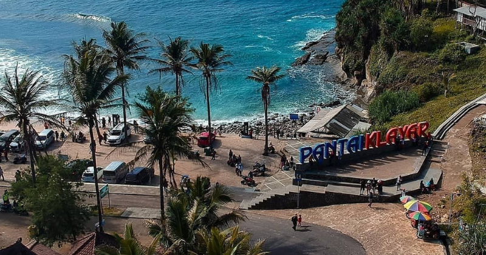
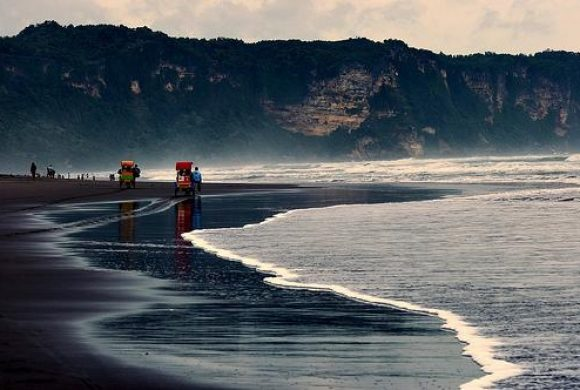

PESONA INDONESIA
Some beautiful tours in Indesia
Pantai Klayar

Pantai Klayar adalah sebuah pantai dengan pasir putih dan batu karang serta tebing-tebing batu yang mengelilingi.
Pantai ini terletak di Pacitan, Jawa Timur dan berbatasan dengan Wonogiri, Jawa Tengah.
Tepatnya berada di Desa Sendang, Kecamatan Donorojo, Kabupaten Pacitan, Provinsi Jawa Timur.
Jaraknya sekitar 40 kilometer ke arah barat dari Kota Pacitan.
Pantai ini masih segaris dengan Pantai Teleng Ria yang sudah dikelola sebagai tempat wisata terlebih dahulu.
Lihat Detail....
Pantai Parangtritis
.jpg) Pantai Parangtritis hanya berjarak 27 km dari pusat Kota Yogyakarta.
Pantai ini terkenal dengan pemandangan sunset yang romantis.
Selain itu, Pantai Parangtritis ini merupakan pantai yang paling terkenal di antara pantai-pantai
lain yang tersebar di wilayah Yogyakarta.
Pantai ini mempunyai pemandangan yang unik dan tidak terdapat pada obyek wisata lain.
Obyek wisata ini mempunyai ombak yang besar dan di sekitar tempat wisata ini terdapat
gunung-gunung pasir yang disebut dengan gumuk.
Lihat Detail...
Pantai Parangtritis hanya berjarak 27 km dari pusat Kota Yogyakarta.
Pantai ini terkenal dengan pemandangan sunset yang romantis.
Selain itu, Pantai Parangtritis ini merupakan pantai yang paling terkenal di antara pantai-pantai
lain yang tersebar di wilayah Yogyakarta.
Pantai ini mempunyai pemandangan yang unik dan tidak terdapat pada obyek wisata lain.
Obyek wisata ini mempunyai ombak yang besar dan di sekitar tempat wisata ini terdapat
gunung-gunung pasir yang disebut dengan gumuk.
Lihat Detail...
Pantai Parangkusomo

Pantai Parangkusumo (Jawa: ꦥꦱꦶꦱꦶꦂ ꦥꦫꦁꦏꦸꦱꦸꦩ, translit. Pasisir Parangkusuma)
merupakan tempat wisata yang terletak di Kapanéwon Kretek, Kabupaten Bantul, Daerah Istimewa Yogyakarta, Indonesia.
Jaraknya kurang lebih 30 km di sebelah selatan Kota Yogyakarta.
Pantai ini adalah salah satu destinasi wisata terkenal di Yogyakarta bersama dengan Pantai Parangtritis.
Pantai ini terletak di antara Pantai Parangtritis dan Pantai Depok.
Pantai Parangkusumo memiliki pasir berwarna hitam dengan garis pantai yang luas, tak jauh dari pantai terdapat objek wisata Gumuk Pasir Parangkusumo,
Gumuk Pasir adalah sebuah pasir yang terbang terbawa angin dan jatuh menjadi sebuah gundukan-gundukan pasir yang mirip sebuah gurun pasir,
hal ini yang membuat Kabupaten Bantul dijuluki Sahara van Java.
Lihat Detail...
Kembali Ke Atas